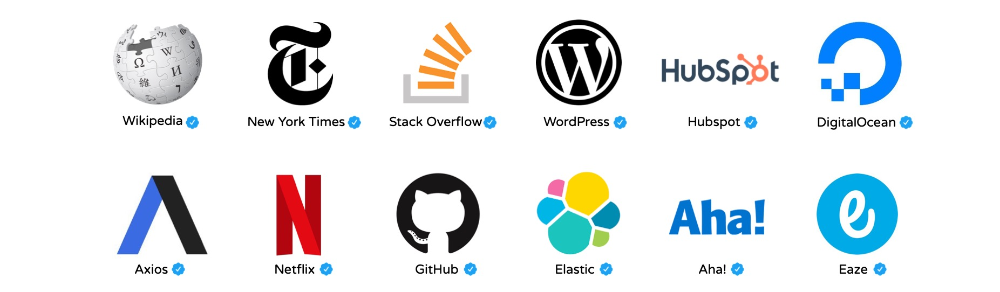

Back
Ditto Does The Hard Work For You
What is Ditto?
Ditto is a revolutionary product that is designed to replace tedious meeting
notes with transcribed text, summaries, and help you understand complex
notes. With Ditto, you can capture every detail of a meeting, and never miss
an important point again. The AI-powered software records and transcribes
conversations, categorizes information, and creates easily digestible
summaries. Whether you're in a one-on-one meeting, a group brainstorming
session, or a conference call, Ditto ensures that you have a complete and
accurate record of the conversation. With Ditto, you can free up your time
and focus on what really matters, safe in the knowledge that you can refer
back to the meeting notes at any time.
Everyone loves Ditto!
" As a busy executive, I'm
constantly juggling multiple meetings and projects, and it can be
challenging to keep track of all the details. That's why I started using
Ditto, and it's been a game-changer for me. I no longer have to worry
about taking extensive notes during meetings or missing critical
information. Ditto does it all for me. The AI-powered software captures
every detail, categorizes information, and creates summaries that are easy
to understand. With Ditto, I'm more productive and focused in meetings,
knowing that I can rely on the software to provide me with accurate and
complete notes. I would highly recommend Ditto to anyone who wants to be
more efficient and effective in their work.
" -John Smith
" I'm a research scientist, and I
attend a lot of conferences and meetings where complex information is
discussed. Taking notes can be a challenge, and I often struggle to keep
up with the discussion. That's why I was excited to try Ditto, and it's
exceeded my expectations. The software is incredibly accurate and captures
every detail of the conversation. I'm no longer stressed about taking
notes or worried that I've missed something critical. With Ditto, I can
focus on the discussion and ask more informed questions. The summaries are
easy to understand, and I can quickly refer back to the notes at any time.
Ditto has made my work so much easier and more efficient, and I would
highly recommend it to anyone in a similar position.
" -Mike Hawk
Trusted by companies you know!

GET STARTED DITTO